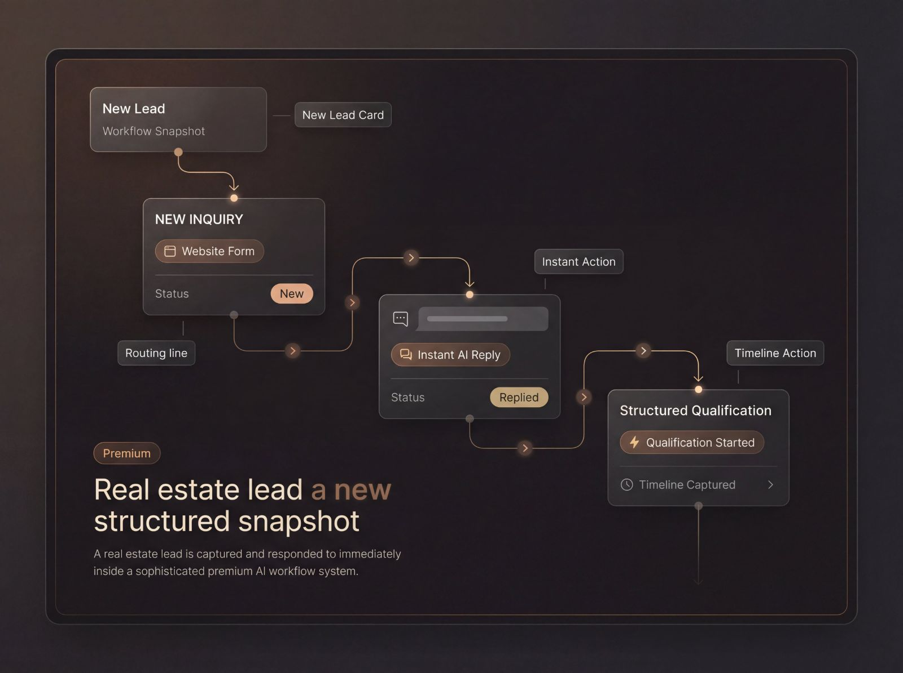
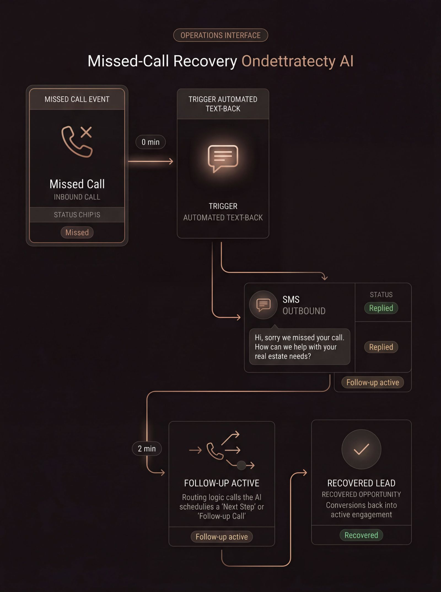
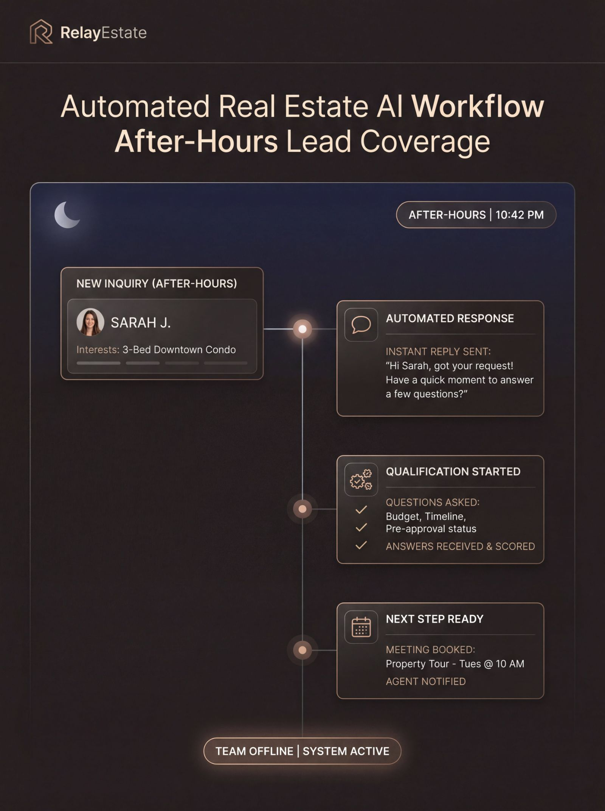

Die Anfrage kommt an, aber das Zeitfenster für die Antwort ist kurz.
Ein Website-Formular, eine Portal-Anfrage, ein verpasster Anruf oder eine Empfehlung erzeugt Interesse. Ist die erste Antwort langsam, verliert sich der Schwung sofort.
Automatisieren Sie Antwort, Qualifizierung, Verteilung, Terminierung und CRM-Aktualisierung, damit Ihr Team jede Anfrage weiterbringt, bevor der Schwung verloren geht.
Meinen Anfragefluss abbildenDie meisten Teams bekommen bereits Anfragen über Website, Portale, Empfehlungen und Telefon. Das eigentliche Problem ist, was in den Minuten und Stunden nach dieser ersten Anfrage passiert.
Ein Website-Formular, eine Portal-Anfrage, ein verpasster Anruf oder eine Empfehlung erzeugt Interesse. Ist die erste Antwort langsam, verliert sich der Schwung sofort.
Sind die ersten Minuten vorbei, hängt die Qualität des Nachfassens oft davon ab, wer verfügbar ist, wer daran gedacht hat und was an diesem Tag sonst noch los ist.
Zeitplan, Absicht, Dringlichkeit, Preisrahmen und Lage werden nicht immer klar erfasst, was sowohl die Verteilung als auch die Qualität des Nachfassens schwächt.
Sobald die Anfrage übergeben werden muss, entstehen Reibungen zwischen Postfächern, Kalendern und Maklerinnen. Gute Anfragen bleiben im Übergang liegen.
RelayEstate verbindet Antwort, Qualifizierung, Verteilung und CRM-Kontinuität zu einem strukturierten Ablauf, damit Ihr Team schneller arbeitet, ohne den Kontext zu verlieren.
Wien Innere Stadt – 3 Zimmer – bezugsfertig in 60 Tagen
Nennt den nächsten Schritt und startet die Qualifizierung
Kaufabsicht mit Budget und passender Lage bestätigt
Der richtigen Person zugewiesen, mit Zusammenfassung, Tags und Aufgabe
Website-Formulare, Portal-Anfragen und verpasste Anrufe beantworten, ohne auf manuelle Erstkontakt-Abdeckung zu warten.
Absicht, Dringlichkeit, Budget und Lage erfassen, damit das Nachfassen mit brauchbarem Kontext beginnt statt mit Vermutungen.
Die Anfrage verteilen, die nächste Aktion auslösen und Notizen, Tags, Erinnerungen und Statusänderungen ins CRM schreiben.
RelayEstate beschleunigt nicht nur das Nachfassen. Es verbessert, wie Ihr Team nach jeder Anfrage antwortet, qualifiziert, verteilt und Kontinuität hält.
Antworten auf Website, Portal und verpasste Anrufe bleiben auch außerhalb der Verfügbarkeit aktiv.
Jedes Gespräch startet mit klareren Signalen zu Absicht, Dringlichkeit, Zeitplan und Passung.
Verteilung, Erinnerungen und Terminübergänge passieren mit weniger manuellem Nachlaufen.
Zusammenfassungen, Tags, nächste Aktionen und Status bleiben teamweit aktueller.
Website- und Portal-Anfragen sofort beantworten, bevor der Schwung nachlässt.
Verpasste Anrufe in strukturiertes Nachfassen per SMS verwandeln statt in Sackgassen.
Abende und Wochenenden aktiv halten — mit geführten nächsten Schritten und Qualifizierung.
RelayEstate hilft Teams, Antwort, Verteilung, Erinnerungen und Übergabe genau in jenen Momenten am Laufen zu halten, in denen manuelles Nachfassen üblicherweise abreißt.
Ablauf-Beispiele ansehen


Wir bilden zuerst Ihren bestehenden Anfragefluss ab und setzen die Logik für Antwort, Qualifizierung und Verteilung dort ein, wo sie operativ am meisten bewirkt.
Audit -> Einführung -> Feinschliff
Gebaut, um Antwortabdeckung, Klarheit bei der Übergabe und Kontinuität zu verbessern — ohne die Arbeitsweise Ihres Teams zu stören.
AnfrageeingangAbgebildet
VerteilungslogikKonfiguriert
CRM-KontinuitätStrukturiert
RelayEstate fügt sich in die Antwort-, Verteilungs- und Nachfass-Systeme ein, die Sie bereits nutzen, und schließt die Lücken, an denen der Schwung einer Anfrage verloren geht.
Nein. RelayEstate stärkt die Antwort- und Verteilungsebene rund um Ihr bestehendes System. Es erfasst Kontext früher, löst den richtigen nächsten Schritt schneller aus und hält die Kontinuität vor und während der CRM-Übergabe sauberer.
Ja. Eine der größten Lücken ist die Verzögerung, wenn eine Anfrage außerhalb der üblichen Zeiten eintrifft. RelayEstate hält die Erstantwort aktiv und führt die Anfrage in einen strukturierten Nachfass-Pfad, ohne auf manuelle Verfügbarkeit zu warten.
Die Qualifizierungslogik lässt sich an jene Faktoren anpassen, die Ihr Team tatsächlich nutzt: Absicht, Zeitplan, Dringlichkeit, Markt, Preisrahmen und Teamstruktur. Das Ziel ist keine generische Automatisierung, sondern eine saubere operative Passung.
Website-Formulare, Portal-Anfragen, verpasste Anrufe, Empfehlungen und andere Eingänge lassen sich in dieselbe Kontinuitätsebene bringen, damit Ihr Team nicht auf zersplitterte Antwortgewohnheiten je Kanal angewiesen ist.
Das hängt davon ab, wie viele Quellen, Verteilungsbedingungen und Übergaberegeln abzubilden sind. Meist ist der erste Schritt nicht die volle Einführung, sondern das Aufspüren der Stellen, an denen der Schwung tatsächlich verloren geht.
Es sollte sich reaktionsfreudiger anfühlen, nicht roboterhafter. Es geht darum, dass keine Anfrage im Schweigen wartet, kein Kontext früh verloren geht und keine qualifizierte Anfrage stockt, bevor der nächste menschliche Schritt bereit ist.
RelayEstate zeigt Ihnen genau die Stellen, an denen Antwortzeit, Qualifizierung, Verteilung und Übergabe Schwung verlieren — und baut den Weg zu einem schnelleren, verbundenen nächsten Schritt neu auf.